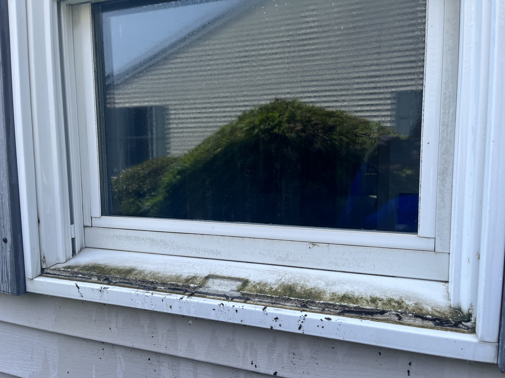
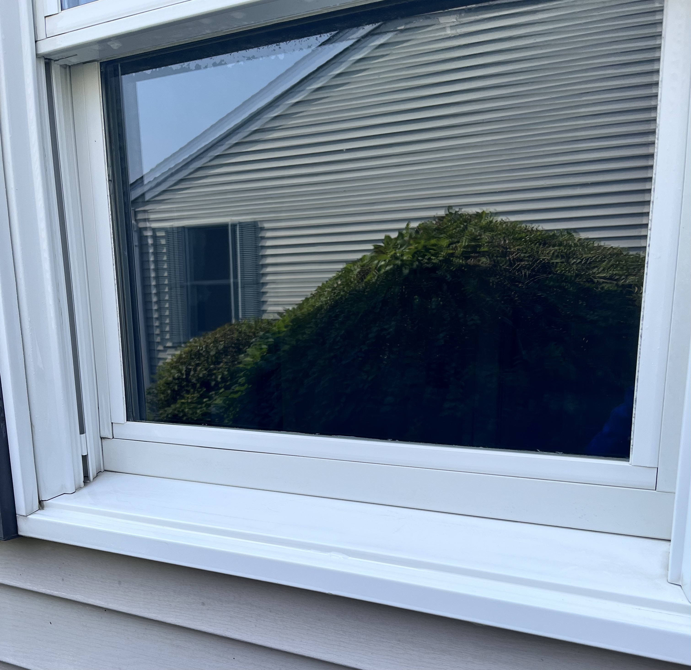
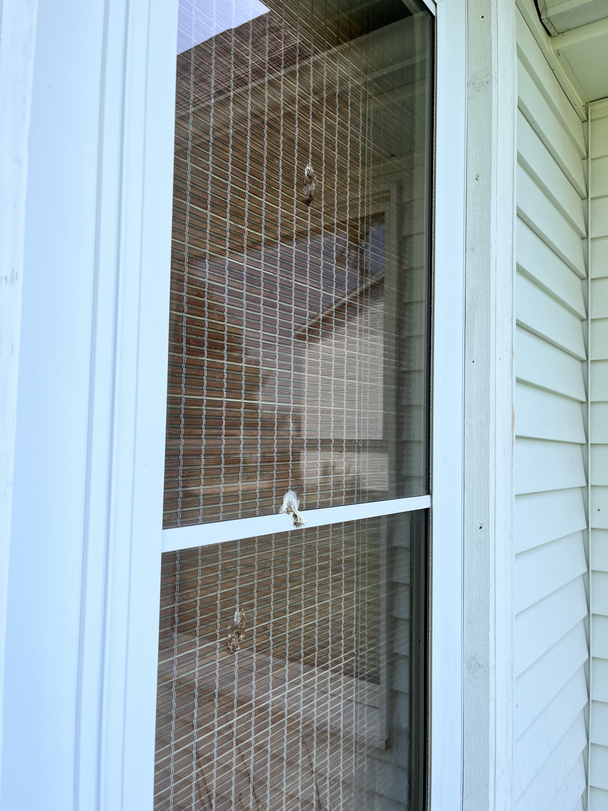
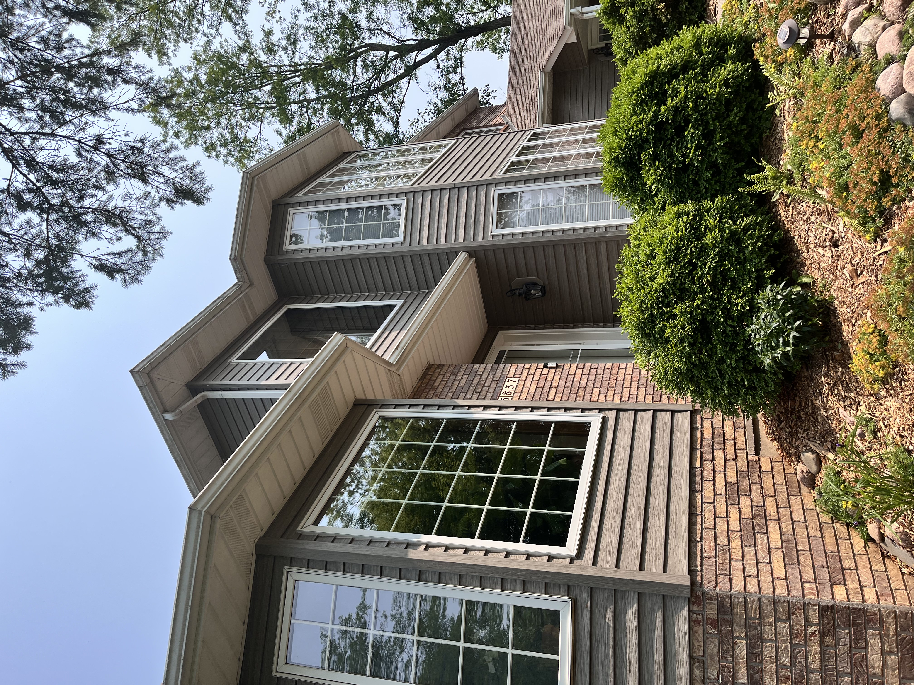
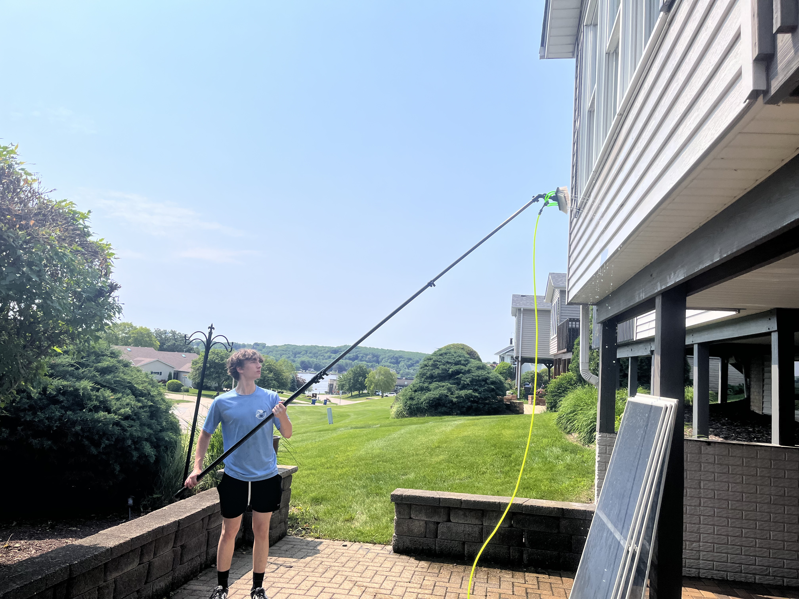
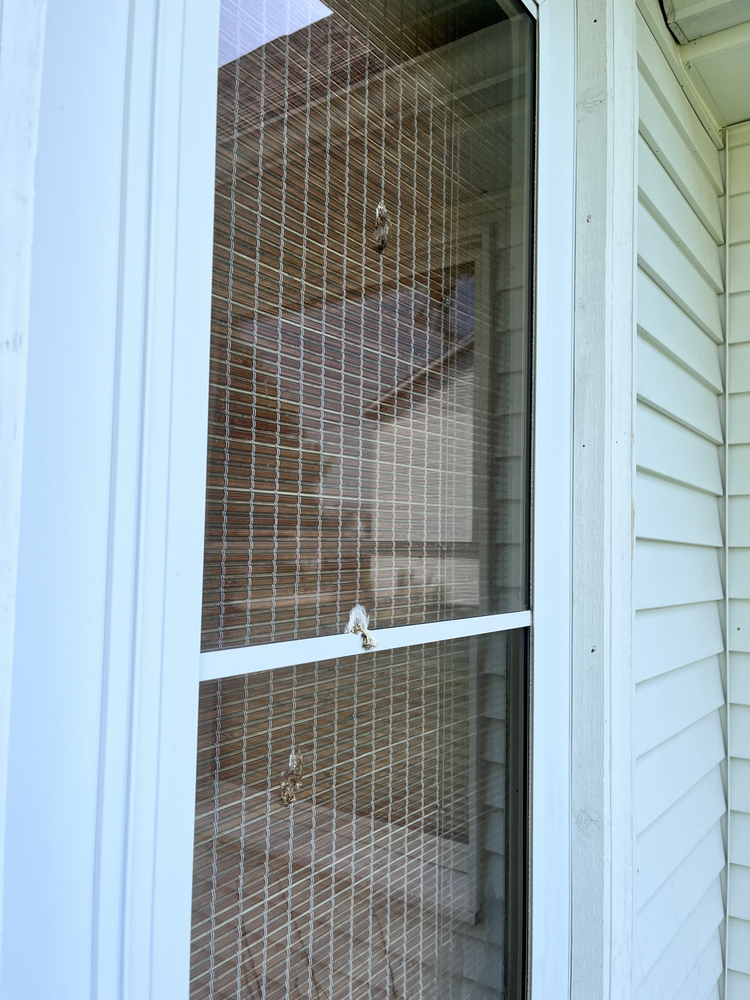
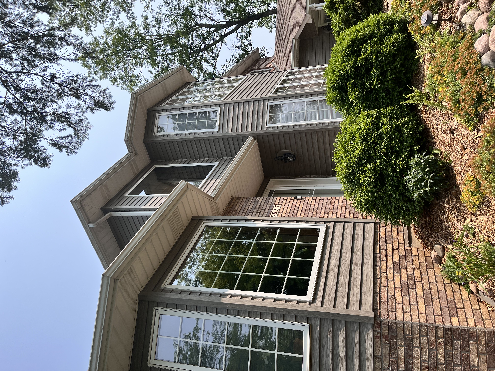
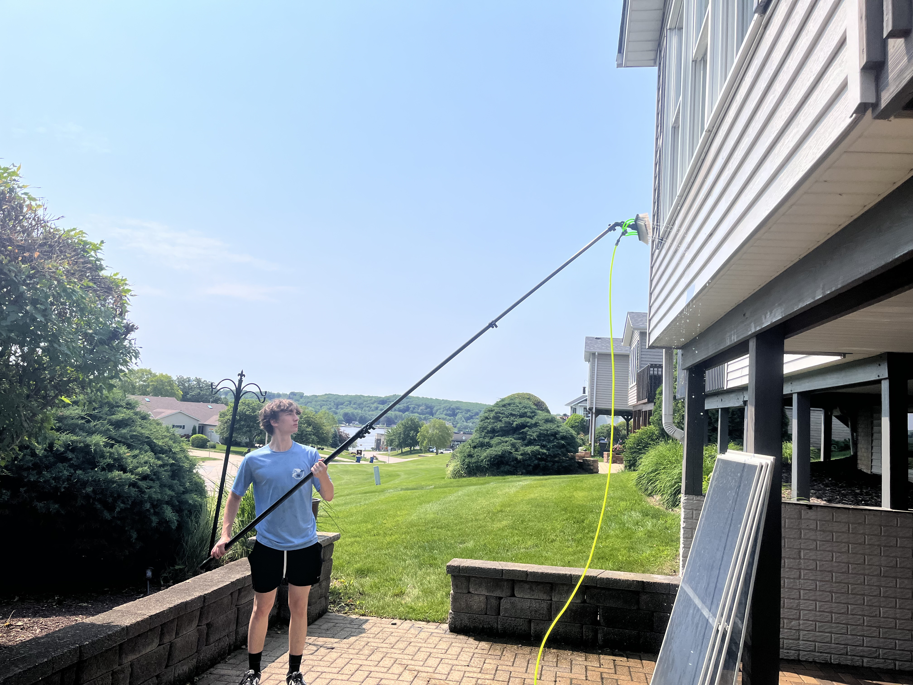

At WaterWerks, We Take Pride in Our Window Washing Services
Windows are one of the first things people notice about your home or business. Let WaterWerks help you maintain crystal-clear views with our professional exterior window cleaning services.
We use a combination of proven techniques and state-of-the-art equipment to deliver streak-free, spotless windows and frames every time. Whether it’s a residential home or a commercial building, we provide meticulous care and attention to detail.
What’s Included in Our Window Washing Service?
- Use of state-of-the-art water purification systems to avoid streaks
- Careful washing to ensure no damage to your windows.
- Rinsing and cleaning of your sills and frames.
- Removal of all debris and buildup, leaving your home spotless.
Our team uses professional-grade equipment to give your home a fresh, clean appearance. We make sure to follow all safety protocols and take every precaution to protect your property during the cleaning process.
Request a QuoteBefore & After

Before

After
Gallery
 




